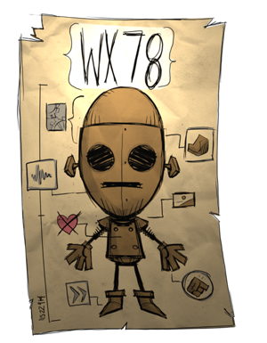
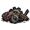

| WX-78 | |
|  |
|
| Nickname | The Soulless Automaton |
| Motto | "EMPATHY MODULE NOT RESPONDING." |
| Perk | Not a picky eater Charged by lightning, damaged by rain Can upgrade with gears |
| Sanity | 100-300 |
| Health | 100-400 |
| Hunger | 100-200 |
| “ | LIFE IS INEFFICIENT | ” |
| –WX-78 | ||
WX-78, being a robot, will take damage when it is in the Rain. The amount of rain does not matter and WX-78 will always receive 0.5 Health point of damage every 3-5 seconds. The damage will not stun it when taken, similar to Fire damage. When taking rain damage, WX-78 periodically emits light due to sparks flying off its body. This provides enough light to prevent Charlie from attacking it, but WX-78 will suffer great sanity loss from the darkness. Using an Umbrella though will prevent the health loss and the sparks.
WX-78 glowing during the evening after being struck by lightning.
The first power is SYSTEM OVERLOAD, activated by being struck by Lightning. In thunderstorms, WX-78 will draw in lightning similar to a Lightning Rod and can set fire to nearby objects when struck. This will cause it to instantly regain its health, gain a speed boost, and emit an amount of light similar to a Torch. It will also prevent it from freezing for the duration of the effect. WX-78 will lose 33 Sanity when initially struck, and can also be struck multiple times even while already overloaded. SYSTEM OVERLOAD will last roughly 1 day. Being near a Lightning Rod or using an Umbrella will prevent WX-78 from being hit by lightning.
SYSTEM OVERLOAD will also be initiated when lightning strikes WX-78 subsequently after the following occasions:
The second power is WX-78's ability to consume Gears to upgrade itself. When eating a Gear WX-78 will receive an upgrade for its maximum Sanity, Health, and Hunger.
The max amount of Gears that can be consumed to gain stat upgrades is 15. However WX-78 can still consume gears to gain the initial 60 Health, 50 Sanity and 75 Hunger that WX-78 always receives when consuming gears. This means for WX-78, Gears can be used as a sort of non-spoiling superior version of Jerky, although it should be noted that Gears are abundant only in Ruins.
Each upgrade adds 20 health, ~6.66 hunger, and ~13.33 sanity. The stepped upgrade effects on sanity and hunger can be seen in the table below.
| | |||
|---|---|---|---|
| No Upgrades | 100 | 100 | 100 |
|  x1 | 120 | 107 | 114 |
| x2 | 140 | 114 | 127 |
| x3 | 160 | 120 | 140 |
| x4 | 180 | 127 | 154 |
| x5 | 200 | 134 | 167 |
| x6 | 220 | 140 | 180 |
| x7 | 240 | 147 | 194 |
| x8 | 260 | 154 | 207 |
| x9 | 280 | 160 | 220 |
| x10 | 300 | 167 | 234 |
| x11 | 320 | 174 | 247 |
| x12 | 340 | 180 | 260 |
| x13 | 360 | 187 | 274 |
| x14 | 380 | 194 | 287 |
| x15 (Max) | 400 | 200 | 300 |
In the Reign of Giants DLC, with the addition of the Wetness mechanic, the way WX-78 is damaged by rain changes a bit. WX-78 will take a maximum of 0.5 damage every 3-5 seconds when totally unprotected. If WX-78 has 50% waterproofing from its equipment (i.e. a Pretty Parasol), it'll take 0.25 damage every 3-5 seconds while it's raining. If WX-78 is still wet after it stops raining, it will take damage at a rate of 0.3 damage every 3-5 seconds until it is dried off. If WX-78 is not very wet, it won't get "drying damage" for very long (further rewarding high waterproofness), but if it is soaked, it could last quite a while.
In addition to this, there are many new Chess biomes scattered around the world in Sandbox Mode which may have Clockwork Monsters, making it easier to acquire Gears without having to go underground or to a new world. Also, Tumbleweed has made Gears renewable, which means using gears as un-perishable food is much more viable.
")
")
| Player Characters |
| Wilson quotes ⋅ clothes • Willow quotes ⋅ clothes • Wolfgang quotes ⋅ clothes • Wendy quotes ⋅ clothes • WX-78 quotes ⋅ clothes • Wickerbottom quotes ⋅ clothes • Woodie quotes ⋅ clothes • Wes quotes ⋅ clothes • Maxwell quotes ⋅ clothes • Wigfrid quotes ⋅ clothes • Webber quotes ⋅ clothes • Unimplemented |

{kind=link}
{kind=link}
{kind=link}
{kind=link}
{kind=link}
{kind=link}
{kind=link}
{kind=link}
{kind=link}